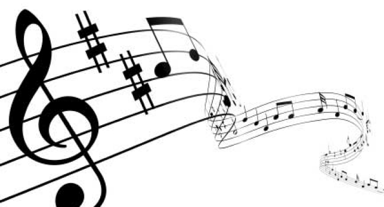

Música
¿Qué es la música?
La música es el arte de combinar los sonidos en una secuencia temporal atendiendo a las leyes de la armonía , la melodía y el ritmo , o de producirlos con instrumentos musicales .
Es la forma de comunicación más ancestral entre los humanos, ya que la comunicación mediante sonidos, gestos y bailes precedió al lenguaje hablado.

Géneros de música
Hay una gran cantidas géneros de música, aunque los más destacados son los siguientes:
- Jazz : se caracteriza por tener melodías que se relacionan por una serie de acordes que se tocan al mismo tiempo.
- Pop : uno de los géneros más pegadizos, lo que le hace tener un gran número de seguidores.
- Electrónica : se destaca por tener sonidos beat, el típico punch-punch .
- Indie : engloba a todas aquellos artistas que no suelen tener discográfica que los apoye (al menos en el momento en que se dan a conocer).
- Reggaeton : proviene del reggae y sus ritmos tan pegadizos, le han hecho coger mucha fuerza en estos últimos años.